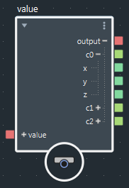

Bifrost 包括用于处理缩放、旋转和平移等变换的基本节点和数据类型。这包括 float 和 double 类型的向量、矩阵和四元数。
使用 matrix_multiply 节点可以乘以矩阵，也可以乘以矩阵和向量。将常规 multiply 节点与矩阵结合使用可生成元素积而不是矩阵积，类似于 Python NumPy 库。
请确保矩阵的维度匹配得当，否则可能会出现意外结果。例如，如果乘以 4×4 和 3×3 矩阵，则 3×3 将自动升级为 4×3 矩阵，结果也是 4×3 矩阵。
Bifrost 使用列向量，这意味着要乘以矩阵和向量，需先乘以矩阵，再乘以向量（后乘）。如果 p 是相对于对象参考帧的位置，L 是对象的局部变换矩阵，W 是对象的父对象的世界变换矩阵，则世界坐标中的位置如以下公式所示：
W × L × p当从使用行向量的源调整公式时，您需要反转相乘的顺序。您可能还需要转置矩阵（如果尚未转置）- 如有必要，系统会自动转置进出主场景的矩阵输入和输出。
使用 SRT_to_matrix 复合可以基于以下要素创建矩阵：
SRT_to_matrix 的输出为 4×4 矩阵，适用于在齐次坐标中乘以向量。要将三维向量转化为齐次坐标并将齐次坐标转化回三维向量，请使用 vector3_to_vector4 和 vector4_to_vector3 - 将输入 w 设置为 1 以变换为位置，或者设置为 0 以仅变换为长度和方向。
或者，如果您需要 3×3 矩阵，请分解 SRT_to_matrix 并使用 matrix_multiply 节点的输出。
操作顺序为先缩放，再旋转，最后平移。如果这些操作用单独的矩阵 S、R 和 T 表示，那么操作的数学顺序为：
T × R × S × p要转化为其他方式，请使用 matrix_to_SRT 将矩阵分解为缩放、旋转和平移这三个组成部分。transform 输入为 4×4 矩阵，但您仍可以连接 3×3 矩阵（在这种情况下，平移输出始终为零向量）。请注意，不考虑斜切和透视 - 如果矩阵中存在斜切和透视，则结果将不正确。
使用 value 节点可以根据各个列和值构造或解构矩阵。
